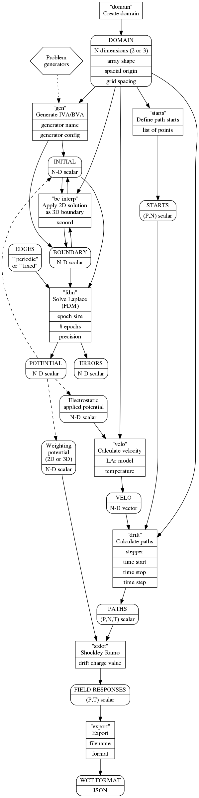

Overview of Pochoir Components
Table of Contents
Component Type Graph
Pochoir is decomposed into commands and data. Commands may take data as input or produce it as output. An item of data is located in the store by its name. A command may also take arguments.
These entities are all brought together in the following type graph which describes how commands are connected together through their types (not instances) of input or output data.

Node legend:
- hexagonal
- included algorithms
- box
- CLI command with args
- round box
- data object with content/size description
Edge legend:
- solid arrows indicate input or output of data
- dashed mean optional interpretations of data
- dotted indicate internal code dependency
Data sizes are indicated with a letter to interpreted as:
- N
- number of dimensions of the problem domain (2 or 3)
- P
- number of drift paths
- T
- number of steps in drift paths
An "N-D scalar" is a scalar array of N dimensions. An "N-D vector" is an N-element list of N-D scalar arrays with each array representing the corresponding vector coordinates. An array may be described as a shape in terms of these numbers. For example a "(P,T) scalar" is a 2-D scalar array of P-rows and T-columns.
Cycles in the graph are natural as some output may be used as input. For example the FDM command internally is iterative and its POTENTIAL N-D scalar solution can be fed back to input as INITIAL N-D scalar. The "bc-interp" command is rather type-iterative. It inputs a 2-D and a 3-D IVA and a 3-D BVA and produces a 3-D IVA AND BVA.